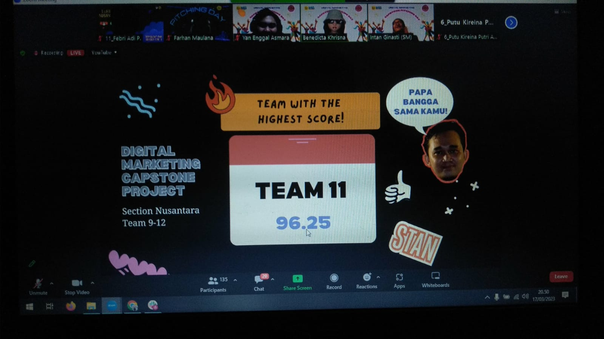
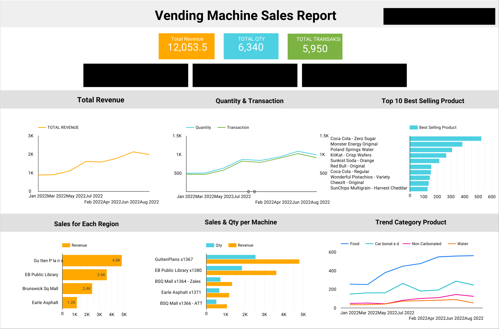

Copyright 2024 Soni Santana
Capstone Projek


Saya berkontribusi dalam merancang kampanye pemasaran untuk startup **Astronauts.id**, dimulai dengan menentukan tujuan pemasaran, mengembangkan marketing funnel, dan mengidentifikasi target audiens. Proyek ini dilanjutkan dengan melakukan analisis kompetitor secara mendalam dan menyusun briefing untuk desain konten media sosial yang digunakan dalam kampanye iklan. Hasilnya, tim kami berhasil terpilih sebagai salah satu dari tim terbaik dari total 12 tim, dengan meraih skor tertinggi di antara peserta lainnya. Prestasi ini menunjukkan kemampuan saya dalam merancang strategi pemasaran yang efektif dan kolaborasi tim yang solid.